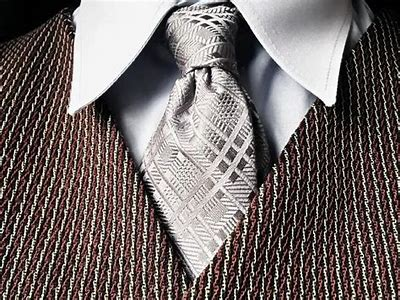
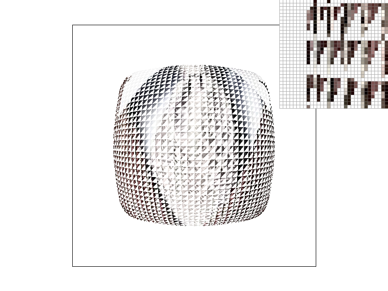
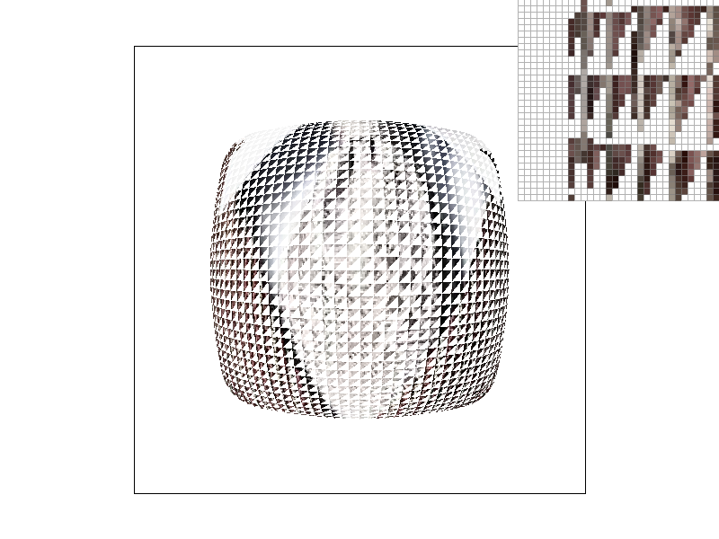

This homework is mainly based on implementing a rasterizer for cool rendering! In this project, I implemented the rendering methods from the very naive to complex ones. The goal is to render images that has great quality with great speed!
In this task, I implemented the following two functions: rasterize_triangle and inbound. The former one implements the rasterizing process by first checking whether the pixels of interest is in bound the picture, then iterate through the pixels inside the bounding box to render the inbound pixels. The description of the algorithm can be described as follows:
Algorithm: Rasterize Triangle (Single-Color)
1. Check if the triangle is within bounds.
2. Iterate through pixels in the bounding box.
3. If a pixel is inside the triangle, fill it with color.
4. Stop checking once leaving the triangle.
As may be seen in this algorithm, it leverages the triangle’s convexity to implement a quitting method, that once it detects a line that has fall inside the triangle leaves its domain, it stops checking the rest of the pixels since it’s impossible for them to fall back inside the triangle again.
As may be observed from the second figure, although my naive approach successfully renders the triangles, the jaggies harms the quality. This issue primarily stems from having too few sample points to render shapes with high quality. In the following task, I’ll try to issue this with super sampling.
In this task, I implemented supersampling that can write the average color of the pixels in the sampling buffer into the corresponding pixel of the frame buffer.To be more specific, I implemented the following functions:
- RasterizerImp::set sample rate(): I enlarged the sample buffer to samplerate ∗ framebuffer to implement rasterizing on a higher resolution
- RasterizerImp::fill pixel(): I differently implemented the function for points and triangles, that for rendering a point, it automatically fills its surrounding pixels in the sampling buffer to avoid supersampling; while for a pixel of a triangle, it fills the pixel with the color just as required.
- downsample(): I visit the √ samplerate ∗ √ samplerate points in the sample buffer to fill their arithmetic average into the corresponding pixel in the frame buffer. Out-ofbound points are omitted.
- RasterizerImp::resolve to framebuffer(): I called the downsample() function above to get the downsampled RGB value of each pixel in the frame buffer. Such changes in sampling algorithm brings along obvious improvements in anti-aliasing. The main reason is that it considers information of each pixel in its neighboring domain; since jaggies often appears on the edges that has dramatic change in color, supersampling is extremely powerful for smoothening them.
As may be observed from the above figures, the rendering quality improves with the increase of sample rate. It’s worth noting that the results for rendering the same skinny triangle corner has a dramatic difference between different sample rates, that high resolution draws the line with blurred color around the edge, providing a smoother demonstration of an ideal edge. The blurring and smoothing is a direct reflect of the downsampling process that I replace the RGB value of a pixel with the arithmetic average of its corresponding supersampled points.
Inspired by the style of Egyptian portraits that always draw every part of a man’s body on the portrait, I let my robot imitate such posture by rotating and translating pieces of its body respectively. Today’s Egyptian Day for my little robot!
Barycentric coordinate is a color blending method that can mix the colors of vertices of an triangle to fill the entire area. It’s implemented by taking the weighted sum of the colors of the vertices.
The above figure can demonstrate the essence of Barycentric Coordinates well, that for each point inside the triangle, it’s color is a weighted blend of the color of the 3 vertices As can be observed from the second figure above, a beautiful color wheel is successfully rendered with the Barycentric Coordinates I’ve implemented.
The pixel sampling for texture mapping is to get the corresponding color of the desired pixel in the texture image. In this task, I implemented nearest sampling and bilinear sampling; while the former simply picks the color of the nearest texel; the latter blenders the weighted color of the nearest 4 texels for smoother rendering.To realize this, I implemented the following 3 functions: - RasterizerImp::rasterize textured triangle: I filled a SampleParams struct and pass it to the tex.sample function for getting the RGB values of the vertices. The following code is a reuse of rasterize interpolated color triangle - Texture::sample nearest: I expanded the input ux&uv ∈ [0, 1] into the texels’ coordinate and rounded them to the nearest integer. mip.get texel is called for fetching its color. - Texture::sample bilinear: I fetched the color of the nearest 4 pixels, and sums them up following the formula below:
As can be discovered, Bilinear Sampling brings along smoother sampling and less aliasing in both low and high sample rate. It owes to the extra computation bilinear sampling does to mix the surrounding texels, that it can successfully avoid the hugely noise-sensitive nature of nearest sampling.
Level sampling is to save computational cost by referring to mipmaps of different levels when sampling pixels at different parts. I changed the following functions for such implementation: - : RasterizerImp::rasterize textured triangle: For each pixel, I now calculate its difference on both coordinates with an implented function computeTextureCoordinates to get its coordinate in uv coordinates. - : Texture::get level: Returning the level in float, waiting for further processing - : Texture::sample: For required lsm, implemented each case as follows: – L ZERO: Don’t call Texture::get level, simply pass 0 to the sampling function. – L NEAREST: Round the level to the nearest interger, and cut it to 3 if exceeds the level limit. – L LINEAR: Call the sampling function at both adjacent levels, and return the weighted sum of the returned color.
Level sampling saves computational cost by using different mipmap levels when sampling pixels at different parts.
The following images are the rendering results of a picture of a tie with rendering parameters in:{LZERO,LNEAREST, LLINEAR} × {PLINEAR, PNEAREST}
  As can be observed above, for the same psm, L LINEAR and L NEAREST has an significant reduce in aliasing, especially for the pixels around the edge of the image. That’s because both L LINEAR and L NEAREST adapt the texture sampling to the effective size of the texture on screen. In other words, rather than always sampling from the highest-resolution (0-th) mip level, these methods choose a mip level that better matches the fragment’s projected texture footprint. In terms of tradeoff, pixel sampling is the most straightforward approach. It’s without saying that it uses the minimum memory and time, but as could be observed in the above results that it may lead to aliasing in marginal pixels, often leading to noticeable jagged edges. In contrast, supersampling can output smooth and finegrained rendering results, but often at the cost of linear increasing demand for memory and time. Also, it’s still vulnerable to aliasing. For an balanced approach, level sampling leverages mipmaps to select an appropriate resolution that strikes a balance between anti-aliasing and calculation cost. All what it takes is a bit of addtional memory to store the additional mipmaps, which brings along huge improvement in rendering results.